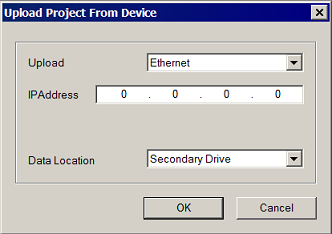

|
|
|
This section describes how to upload project backups from a target machine's main drive, CF card/SD card, or USB drive to Vijeo Designer. Alternatively, you can retrieve main drive, CF card/SD card, or USB drive backups using the Data Manager or the Command Line, see section 20.5, Managing Run-time Data.

All target types use the USB 1.0 protocol. This can cause significant wait times when uploading large projects to the Editor. To reduce the wait times, the project size can be reduced. For more information on how to reduce the project size, see Appendix 7, Project Optimization.
Click the file menu in the editor and click Upload Editor Project.
-or-
Right-click the Vijeo-Manager node and click Upload Editor Project.
In the Upload Project from Device dialog box, specify the upload configurations:

|
Property |
Description |
|
Upload |
Specify the method for uploading the backup: Ethernet, Serial, or USB. |
|
IP Address |
For Ethernet only. Specify the target machine's IP Address. |
|
COM Port
|
For Serial Upload only. Specify the COM port that connects the PC to the target machine. |
|
Baud Rate
|
For Serial Upload only. Select the transmission speed supported by the COM port. |
|
Data Location |
Specify the location where you want to upload the backup files from: Main, Secondary, or Optional drive. |
Click OK to upload the project into the editor.

You may be required to type in a User Name and Password in order to upload or open the backup project. See Section 4.8.8, Adding Project Security for more information on User Names and Passwords.